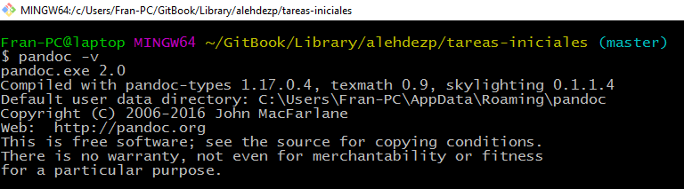
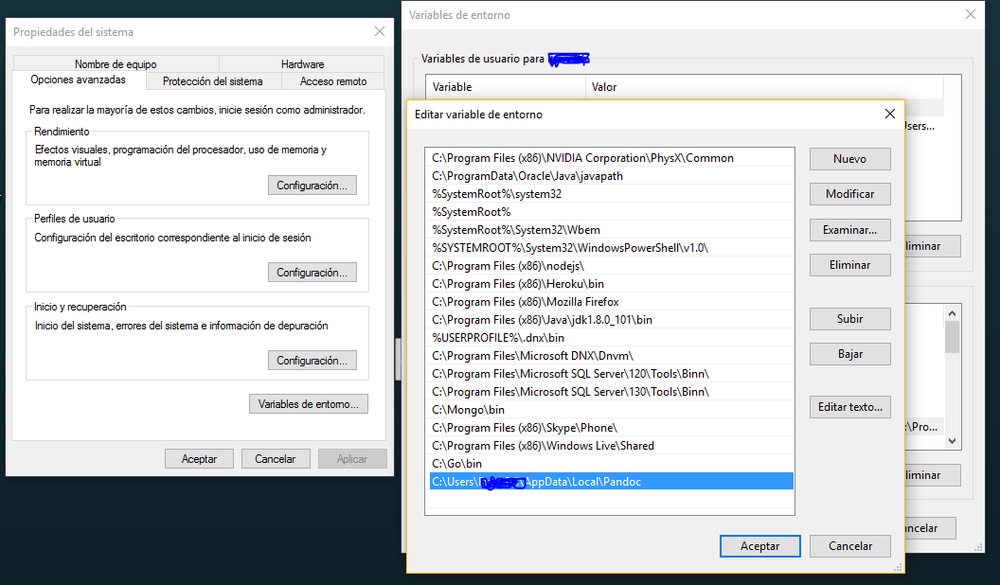
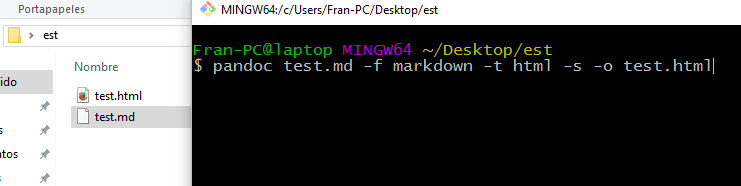
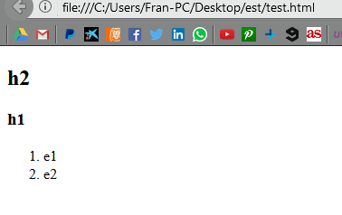

Documentación Pandoc
Pandoc es una herramienta de linea de comandos. No hay interfaz gráfica, por lo que tenemos que usar la terminal,
Para descargarlo vamos a pandoc.org y lo instalamos.
Cómo usarlo.
Primero verificamos que se instaló con el comando pandoc -v en la terminal, y deberíamos tener una salida como esta:

Si no nos reconoce el comando, debemos añadirlo a nuestro PATH de variables de entorno.

El pandoc lo usaremos para convertir un fichero en markdown a html y viceversa. Nos creamos un fichero test.md
## h2
### h1
1. e1
2. e2
Y ejecutamos el comando pandoc test.md -f markdown -t html -s -o test.html , donde -f representa from y -t to,
si queremos traducir de html a markdown solo tenemos que intercambiar dichos formatos.

Resultado:
